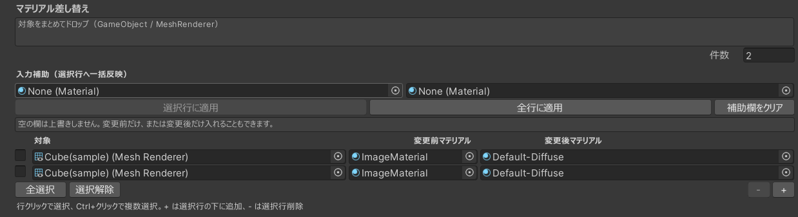

1. できること
有効時（閉店）
- 指定音を再生
- 指定ライトを消す
- 対象のマテリアルを、名前一致で差し替える
- 指定オブジェクト配下のライトマップ / ライトプローブ / リフレクションプローブを切る
無効時（通常）
- 音を止める
- ライトを元の ON/OFF に戻す
- マテリアルを元に戻す
- ライトマップ類を元に戻す
ワールド起動直後（1秒未満）にこのコンポーネントが有効になっても、閉店処理はかけません。LuraSwitch で後から有効にしたときだけ閉店になります。
2. 使い方の基本
ClosingTimeToggle をオブジェクトに付ける- Inspector で音・ライト・マテリアル・ライトマップ対象を設定する
- LuraSwitch でそのオブジェクトを切り替える
LuraSwitch On = 閉店、Off = 通常、です。初期状態は Off（通常営業）にします。
3. LuraSwitch の設定
オブジェクト切り替え用の Switch_Object を使います。
推奨設定
| 項目 | 設定 | 理由 |
|---|
| Default State / Toggle Default On |
Off |
ワールド入場時は通常営業のままにする |
| On Targets |
ClosingTimeToggle を付けたオブジェクト |
On のときだけ閉店コンポーネントが有効になる |
| Off Targets |
空でよい |
閉店用オブジェクト以外を消す必要はない |
| Sync Mode |
用途に合わせる |
店全体で共有するなら Global。個人ごとなら None / Local |
接続手順
- ClosingTimeToggle 用の空オブジェクトを作る（例:
ClosingTime）
- そこに
ClosingTimeToggle を付ける
- Hierarchy 上で、このオブジェクトを 最初は無効（チェックオフ） にしておく
- LuraSwitch の On Targets にこのオブジェクトを入れる
- LuraSwitch の初期状態を Off にする
- スイッチを On にするとオブジェクトが有効になり閉店、Off に戻すと無効になり通常へ戻る
Default State を On のままにすると、入場時点で閉店になります。通常は Off のまま使ってください。
LuraSwitch2 では、Default State を切り替えるとエディタ上でも On/Off の見た目が変わります。Off のとき ClosingTime オブジェクトが非表示／無効になっていれば接続は正しいです。
4. Inspector の設定
音
| 項目 | 内容 |
|---|
| Target Audio | 閉店時に鳴らす AudioSource |
空なら音は使いません。
消すライト
| 項目 | 内容 |
|---|
| Target Lights | 閉店時に消したい Light（複数可） |
無効に戻すと、最初に覚えた ON/OFF に復元します。
マテリアル差し替え
表の1行が「1つの差し替え」です。
| 列 | 内容 |
|---|
| 対象 | MeshRenderer |
| 変更前マテリアル | 探したいマテリアル（名前で照合） |
| 変更後マテリアル | 閉店時に入れるマテリアル |
- 対象から、変更前マテリアルと同じ名前のスロットを探す
- 最初に見つかったスロットだけ差し替える
- 実体が同じアセットである必要はない。名前が同じなら変わる
同じマテリアル名が複数スロットにある場合は、先頭の1つだけ変わります。全部変えたい場合は行を分けてください。
ライトマップを切る対象
| 項目 | 内容 |
|---|
| Lightmap Target Objects | 閉店時にライトマップを切りたい親オブジェクト |
指定オブジェクト自身と、その子の全 Renderer が対象です。無効に戻すと、最初に覚えたライトマップ設定に戻します。
5. マテリアル表の操作
まとめて追加
「対象をまとめてドロップ」に、Hierarchy から GameObject / MeshRenderer を複数ドロップします。
- MeshRenderer が付いているものだけ追加
- 既に入っている対象は重複追加しない
- 変更前・変更後はあとから設定
行の選択
- 行クリック、または左のチェックで選択
- Ctrl（Mac は Command）+ クリックで複数選択
- 「全選択」「選択解除」も使える
行の追加・削除
- + … 選択行の下に空行。未選択なら末尾
- - … 選択中の行だけ削除
- 件数 … 行数を直接指定
入力補助（一括反映）
- 左に変更前マテリアル、右に変更後マテリアルを入れる
- 「選択行に適用」または「全行に適用」を押す
空の欄は上書きしません。変更後だけ一括で入れることもできます。

Inspector のマテリアル差し替え表。ドロップ欄、件数、入力補助、対象 / 変更前 / 変更後、全選択、+/- が並びます。
6. 推奨する設定手順
- ClosingTime オブジェクトを作り、ClosingTimeToggle を付ける
- そのオブジェクトは無効にしておく
- LuraSwitch の On Targets に入れ、初期状態を Off にする
- 音とライトを入れる
- ライトマップを切りたい建物・家具の親を Lightmap Target Objects に入れる
- マテリアルを変えたい Renderer をドロップで追加
- 入力補助で変更前・変更後をまとめて入れる
- LuraSwitch を On にして閉店、Off で復元されるか確認する
名前が一致しない行は何もしません。対象にそのマテリアル名があるか確認してください。
7. 注意
- 対象は MeshRenderer です。SkinnedMeshRenderer だけしかないオブジェクトは入りません
- 同じマテリアルを共有している他オブジェクトにも影響することがあります
- 元の状態は、最初に有効になったタイミングで記憶します
- LuraSwitch の初期状態を On にすると、入場時から閉店になります